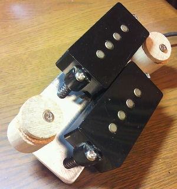

プレシジョンベース用ピックアップをアコースティックギターへ取り付ける
2013年05月03日 カテゴリー：ギター関係
プレシジョンベース用のピックアップのポールピースの間隔は9.5mmぐらいなので、ギターにも取り付けできるかもしれないと思いやってみました。下写真のように、アルミ板にピックアップと木片を取り付け、アコースティックギターのサウンドホール部分に取り付けられるようにしました。

それで音はというと、残念ながら全然アコギっぽい音にはなりませんでした。やはりちゃんとしたアコギ用ピックアップを買ってみようと思います。